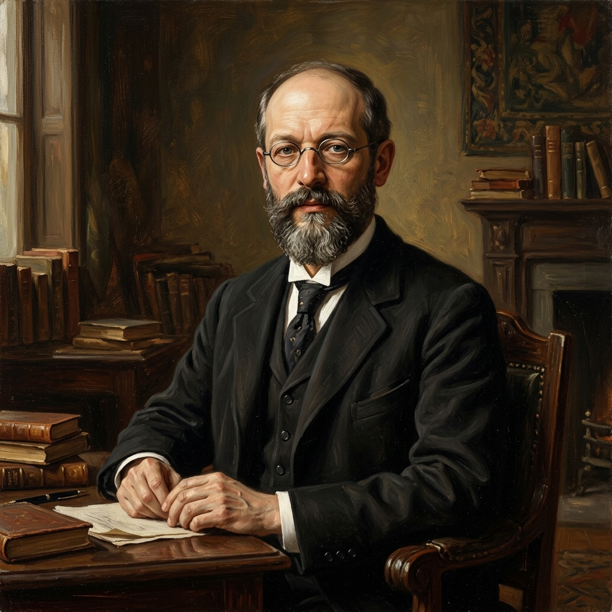

Više od papira i kovanica
Novac nije samo ekonomska kategorija. On je duboko društveni odnos, simbol povjerenja i snažan mehanizam koji oblikuje naše identitete i društvenu strukturu.
Je li novac samo sredstvo razmjene?
Ekonomisti na novac gledaju kao na sredstvo plaćanja, mjeru vrijednosti i zalihu bogatstva. Ali za sociologe, novac je sustav društvenog povjerenja. Komad papira ili broj na ekranu ima vrijednost isključivo zato što svi mi kolektivno vjerujemo da ima vrijednost. Bez tog društvenog konsenzusa, novac je bezvrijedan.
"Novac je najočitiji oblik društvenog povjerenja ikad izmišljen. Njegova magija ne leži u zlatu ili bankama, već u našoj međusobnoj povezanosti."
Simbol povjerenja
Novac zahtijeva institucionalno i interpersonalno povjerenje kako bi funkcionirao.
Mjerilo statusa
Novac nije neutralan; on stvara hijerarhije, klase i određuje društveni ugled pojedinca.
Tri sociološke perspektive na novac
Funkcionalizam
"Novac je društveno ljepilo koje omogućuje kompleksnu razmjenu."
Funkcionalisti gledaju kako novac olakšava socijalnu integraciju. On funkcionira kao univerzalni jezik koji nepoznatim ljudima omogućuje suradnju i razmjenu. Bez novca, moderna kompleksna društva ne bi mogla funkcionirati, a ekonomska specijalizacija bila bi nemoguća.
Konfliktna teorija
"Novac je alat eksploatacije i dominacije."
Konfliktni teoretičari (poput Marxa) vide novac kao sredstvo pomoću kojeg moćne grupe akumuliraju bogatstvo i kontroliraju resurse. Novac stvara klasne razlike i pretvara radničko vrijeme u profit vlasnika. Monetarni sustav nije neutralan – on održava nejednakost.
Interakcionizam
"Novac je simbol kojem dodjeljujemo značenje."
Interakcionisti proučavaju kako novac oblikuje svakodnevne odnose. Novac mijenja značenje situacije (npr. razlika između poklona prijatelju i plaćanja usluge). Također istražuju kako trošenjem novca na određene stvari (brendove, umjetnost) pojedinci izgrađuju svoj identitet.

Georg Simmel
Filozofija novca (1900.)
Paradoks Novca: Sloboda i Otuđenje
Simmel je primijetio da novac ima dvostruki učinak na modernog čovjeka. S jedne strane donosi nevjerojatnu slobodu, a s druge potiče otuđenje (alijenaciju).
🕊️ Oslobođenje
Novac nas oslobađa tradicionalnih veza. Više nismo vezani za zemlju ili gospodara. Možemo prodati svoj rad bilo kome i kupiti što god želimo.
🧊 Hladnoća odnosa
Kvaliteta se svodi na kvantitetu. Umjesto dubokih osobnih veza, interakcije postaju transakcijske, proračunate i bezlične ("Koliko to košta?").
Komodifikacija
Proces u kojem stvari koje ranije nisu imale cijenu (poput emocija, zdravlja, znanja, umjetnosti, vode) postaju roba kojom se trguje na tržištu.
"Ima li nešto što se danas ne može kupiti novcem? Ako zdravlje i obrazovanje postanu samo roba, gubimo li njihovu pravu društvenu vrijednost?"
Simbolička granica
Način na koji trošimo novac poručuje tko smo. Upadljiva potrošnja (kupovina luksuznih brendova) služi isključivo kako bismo društvu signalizirali naš status i uspjeh.
"Ne kupujemo Rolex zato što točnije pokazuje vrijeme, već zato što jasno komunicira našu poziciju u društvenoj hijerarhiji."
Sociologija u praksi
Pogledaj priloženi video materijal, a zatim usmeno ili pismeno odgovori na pitanja za promišljanje.

Gledaj video na YouTube-u
⚠️ Vlasnik videa je onemogućio prikaz na drugim stranicama
📝 Pitanja za analizu
-
1
💡 Najbitnija spoznaja
Što mislite da je najbitnija spoznaja o novcu koju ste saznali iz pogledanog videa?
-
2
👁️ Sociološka perspektiva
Kojoj sociološkoj perspektivi pripada pristup koji ovaj video zauzima i zašto?
-
3
⚖️ Vrijednost novca
Mislite li da novac zaslužuje i opravdava vrijednost koju ima u našim životima i objasnite odgovor.